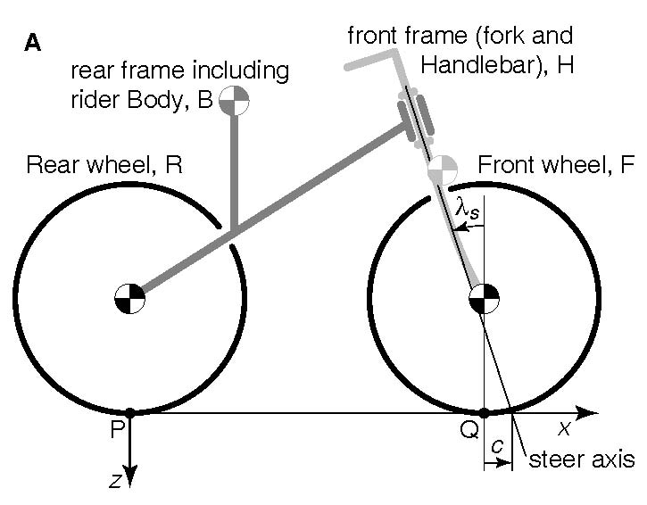
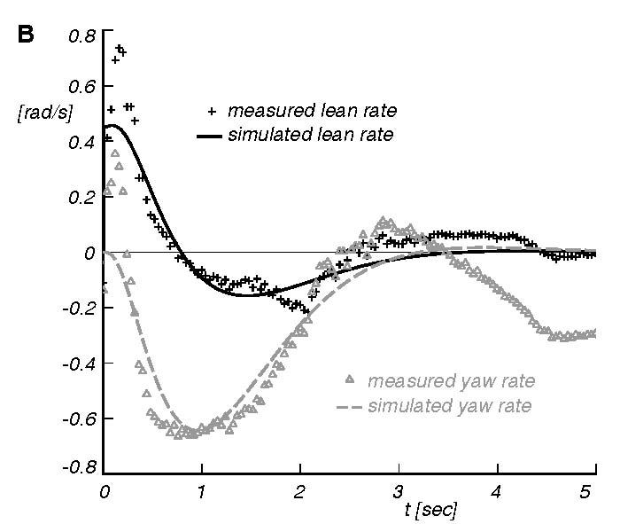

|
pshacker |
|
|
Delft University of Technology |
pshacker
a Matlab
wrapper for the postscript language
January 2010
A. L. Schwab and J. P. Meijaard
PostScript is a graphic programming language developed by Adobe Systems that allows its user to produce high-quality graphics and text that can be printed.
The language is somewhat hard to use because it uses this crazy Reverse Polish Notation (RPN). Therefore we wrote a Matlab wrapper around it, with identical function names as the postscript function names. These collection of Matlab functions are called 'pshacker'.
A quick and easy
introduction to postscript is 'Learning PostScript by Doing', by Andre Heck (2005):
http://staff.science.uva.nl/~heck/Courses/Mastercourse2005/tutorial.pdf
The official
postscript language reference books are the 'green book':
http://www-cdf.fnal.gov/offline/PostScript/GREENBK.PDF
and the 'blue book' (tutorials):
http://www-cdf.fnal.gov/offline/PostScript/BLUEBOOK.PDF
We learn by example. Read page 1-5 from Heck 2005.
The equivalent pshacker matlab program for EXERCISE 2 is exercise2.m:
% define a global variable which holds the postscript file identifier
global PSFID
% open the file that will contain the postsript commands
PSFID=fopen('exercise2.ps','w')
% write the header that every ps file needs
header
% write the bounding box to the file
boundingbox(5,5,105,105)
% write some shorthand notations to the file
prolog
a=10;
b=90;
newpath
moveto(a,a)
rlineto(b,0)
rlineto(0,b)
rlineto(-b,0)
closepath
setlinewidth(5)
stroke
showpage
% write some closing postscript statements to the file
trailer
eof
% close the file
fclose(PSFID)
And then the postscript file exercise2.ps which exercise2.m creates looks like this:
%!PS-Adobe-3.0
%%BoundingBox: 5 5 105 105
%%BeginProlog
/CP /closepath load def
/CT /curveto load def
/GR /grestore load def
/GS /gsave load def
/L /lineto load def
/M /moveto load def
/NP /newpath load def
/RC /rcurveto load def
/RF /rectfill load def
/RS /rectstroke load def
/RL /rlineto load def
/RM /rmoveto load def
/RO /rotate load def
/SC /scale load def
/SF /selectfont load def
/SD /setdash load def
/SG /setgray load def
/SL /setlinewidth load def
/S /show load def
/ST /stroke load def
/TR /translate load def
/SHB {dup stringwidth pop neg exch show 0 rmoveto} def
/SHL {dup stringwidth pop neg 0 rmoveto show} def
/SHM {dup stringwidth pop 2 div neg 0 rmoveto show} def
%%EndProlog
NP
10 10 M
90 0 RL
0 90 RL
-90 0 RL
CP
5 SL
ST
showpage
%%Trailer
%%EOF
The first line %! is mandatory and tells us its postscript. Next
the bounding box is defined. The prolog has a number of definitions with
shorthand notations, these make the postscipt file shorter because instead of
writing 10 10 moveto we can write
10 10 M, a silent convention is that self made
definitions are in capitols.
After the prolog we finally have our small example, the drawing of a rectangle.
Note that we have used variables a and
b in the Matlab file instead of the constants 10
and 90. This is one of the most powerful instruments you have with pshacker;
your figure is parameterized. Of course this can also be done within the
postscript language but the RPN make this and the writing of functions within
postscript very cumbersome!
An alphabetic list of the implemented postscript commands is given below. Not all postscript commands are yet implemented, but the collection below has served me well up till now. I tried to keep the postscript command and the matlab function the same, this worked for almost all commands but for a few which already existed in Matlab like fill. Here is the alphabetic overview:
arc(x,y,r,ang1,ang2)
arcn(x,y,r,ang1,ang2)
arct(x,y,r,ang1,ang2)
boundingbox(llx,lly,urx,ury)
circle(x,y,r)
closepath
comment(str)
creationdate(str)
creator(str)
curveto(x1,y1,x2,y2,x3,y3)
eof
fil
grestore
gsave
header
initclip
lineto(x,y)
moveto(x,y)
newpath
pijlpunt(xp,yp,angle,dx,dy)
pijl(x1,y1,x2,y2,dx,dy)
prolog
pstitle(str)
rcurveto(dx1,dy1,dx2,dy2,dx3,dy3)
rectclip(x,y,width,height)
rectfill(x,y,width,height)
rectstroke(x,y,width,height)
rlineto(x,y)
rmoveto(x,y)
rotate(dalfa)
scale(sx,sy)
selectfont(fontname,fontsize)
setdash(arr,offset)
setgray(x)
setlinecap(x)
setlinejoin(x)
setlinewidth(x)
setmiterlimit(x)
show(str)
showback(str)
showl(str)
showm(str)
showpage
stroke
title(str)
trailer
translate(x,y)
These files can be found in the zip file pshacker.zip. Unzip the file in a directory on your computer f.i. D:/MATLAB/user/pshacker and add this path to the Matlab path: path(path,'D:/MATLAB/user/pshacker').If you write an m-file to make a new figure don't forget to put in as one of the first lines of your code the declaration of this global variable PSFID, global PSFID.
The implementation of the commands is very straight forward, as an example I show the m-file moveto.m for the postscript command moveto:
function moveto(x,y)
global PSFID
if nargin==1
fprintf(PSFID,'%g %g M\n',x(1),x(2));
else
fprintf(PSFID,'%g %g M\n',x,y);
end
It simply makes use of the fprintf
command to write the postscript command together with the numeric data to the
file in this weird RPN. Note that you can call moveto(P) with an array P then it
assumes that the fist element P(1) holds x and the second element P(2) holds y.
I have also created some handy extra functions like f.i.
pijl(x1,y1,x2,y2,dx,dy) which draws a line with
an arrow head.
If you miss a postscript command then its very easy to add that to your
implementation.
Next I will give two examples of application, a drawing and a graph. Just run the m-file, look at the figure and then look in the m-file for the commands I used. No nice programming things, just some examples.
The first example is a drawing of a bicycle, fig1aBicycleModel.m. The resulting figure should look like this:
global PSFID

PSFID=fopen('fig1aBicycleModel.ps','w')
header
boundingbox(152,169,405,357)
pstitle('Bicycle model degrees of freedom')
creator('pshacker')
creationdate(date)
prolog
dots=0.24;
translate(200,200)
selectfont('Helvetica-Oblique',10)
% JBini_Benchmark2.m
scf=140;
l=scf*1.02;
Rr=scf*0.33;
Rf=scf*0.33;
lambda=pi/10;
trail=scf*0.08;
...........
The second example is a graph. The data for the graph is in the Matlab data file run19sm.mat and the m-file which generates the graph is fig3bLeanYawRateStableBicycle.m. The figure should look like this:
function fig4
global PSFID
if exist('tdleans')~=1
load run19sm.mat;
end;
PSFID=fopen('fig3bLeanYawRateStableBicycle.ps','w')
header
boundingbox(164,381,401,582)
pstitle('Stable Bicycle GB7Sv9e lean and yaw angles and rates measured and simulated')
creator('pshacker')
creationdate(date)
prolog
d=0.24;
translate(200,400)
selectfont('Helvetica-Oblique',8)
% b=5*40;
% h=8*18;
b=5*40;
h=8*22.5;
xmin=0;
xmax=5;
dx=xmax-xmin;
ymin=-0.8;
ymax=0.8;
dy=ymax-ymin;
newpath
setlinewidth(3*d)
moveto(0,h+1*d/2)
lineto(0,0)
lineto(b+1*d/2,0)
stroke
%rectstroke(0,0,b,h)
newpath
setlinewidth(1*d)
nb=5;
% gridlines
.............
Success with pshacker, I do hope you enjoy 'programming' your figures as much as we do!
Questions or comments?
a.l.schwab@tudelft.nl
(I made some extension to 2D plotting from 3D data with general projection methods. The m-files are already in the zip file but I will discuss this some time later.)